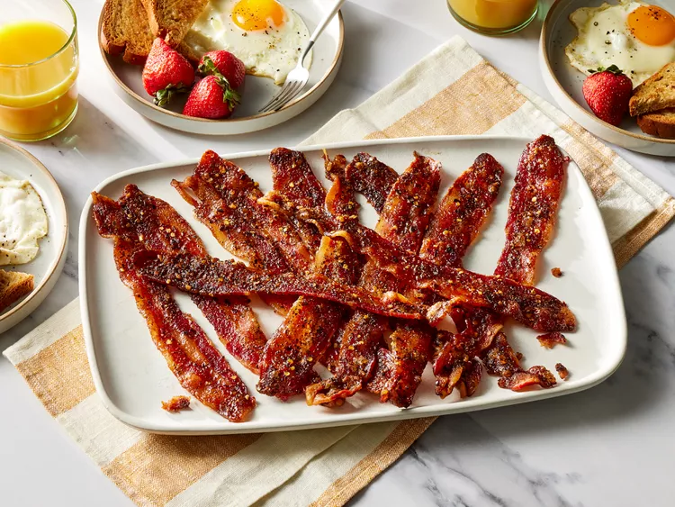

Million Dollar Bacon

Description
This bacon is a sweet and spicy treat that will elevate your breakfast to a whole new level. It's perfect for brunch or as a side dish.
Ingredients
- 1 pound thick-cut bacon
- 1/4 cup brown sugar
- 1 teaspoon cayenne pepper
- 1 teaspoon black pepper
- 1 tablespoon maple syrup
Steps
- Preheat your oven to 400°F (200°C).
- Line a baking sheet with aluminum foil and place a wire rack on top.
- Arrange the bacon slices in a single layer on the wire rack.
- In a small bowl, mix together the brown sugar, cayenne pepper, and black pepper.
- Sprinkle the sugar mixture evenly over the bacon slices.
- Drizzle the maple syrup over the bacon.
- Bake in the preheated oven for 20-25 minutes, or until the bacon is crispy and caramelized.
- Remove from the oven and let it cool slightly before serving.
Home